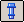

Place fasteners in an assembly
-
Choose Home tab→Components group→Create Part In-Place list→Fastener System

. -
In the graphics window, select one or more circular edges that represent the top face of the holes you want to fill with a fastener.
-
Click the Accept button
 .
. -
In the graphics window, select a cylindrical face that represents the bottom face of the holes you want to fill with a fastener.
-
On the Fastener System dialog box, select the Selection Type for the component.
-
In the Selection Filter tree, click the desired hardware category.
-
In the component Selection list, click a component.
-
Click the Add Fastener button.
-
Repeat steps 5–8 until all fastener components are added.
-
Click OK to place the fastener system.
-
On the Fastener System command bar, click Finish.
-
The Fastener System command requires a connection to a Standard Parts database.
-
The elements you select in the Top Hole and Bottom Hole steps and the fasteners in your database determine which fasteners are displayed in the Fastener System dialog box.
-
You can use the Update command on the PathFinder shortcut menu to update an out-of-date fastener system feature.
-
You can use the Preview in Assembly option to highlight in green the placement of the hardware components in the assembly.
-
You can check the Copy to working folder option to generate the part into the appropriate Standard Parts folder and saves a copy to the local working folder